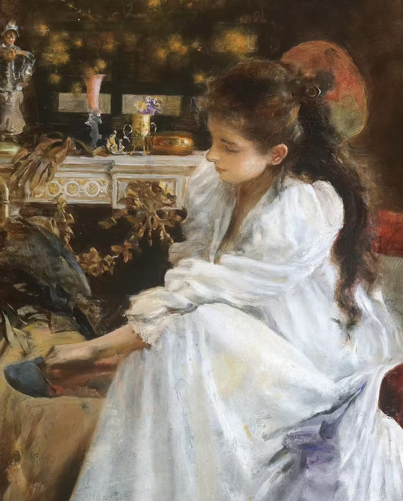

欢迎来到成贝尔迅的维多利亚世界

a girl flung out of space
欢迎来到我的维多利亚风格个人空间。我是成贝尔迅，一名作家，你也可以叫我Blaire，我热爱将古典美学与现代思想相融合。
维多利亚时代以其精致的装饰、复杂的图案和浪漫的氛围而闻名，这正是我在这个网站中想要展现的精神。这里是我分享创作、思考和生活感悟的地方。
"走到现实中去，为自己负责。"
请随意浏览各个页面，了解我的背景、查看我的作品、阅读我的博客文章，或通过联系页面与我取得联系。希望您能在这里找到灵感，享受这段维多利亚风格的旅程。